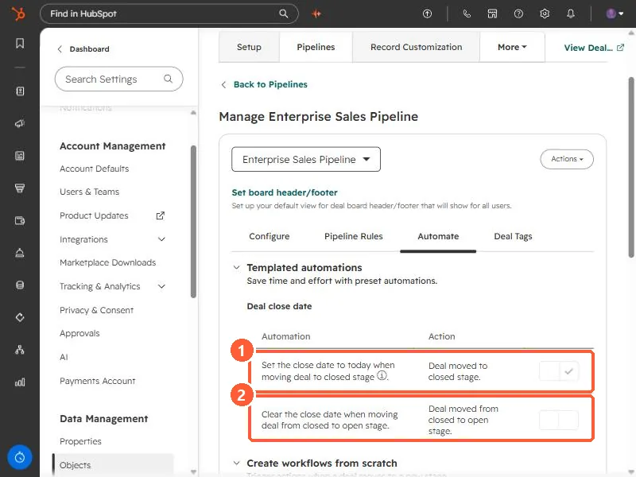

Short answer
By default, HubSpot sets a deal's Close date to today when you move it to a closed stage. If the deal really closed last week, the report will say today. The rule is under the pipeline's Automate tab, Set the close date to today when moving deal to closed stage, and you can turn it off per pipeline. A second rule, Clear the close date when moving deal from closed to open stage, is off by default, so a reopened deal keeps its old close date.
1. Where the rules are
Open a pipeline from deal pipeline settings and click Automate. Under Templated automations, the Deal close date section has two rules.


2. What they do
- Set the close date to today when moving deal to closed stage. On in my demo. HubSpot says this is the default behavior.
- Clear the close date when moving deal from closed to open stage. Off in my demo. By default, a reopened deal keeps the close date it had.
HubSpot also notes that changing a stage's probability between a percentage and Won or Lost in pipeline settings does not change the close date of deals already in it.
3. When to turn it off
- Turn the first rule off if reps record the real close date themselves, or if deals are marked won after the fact, such as after a signed contract arrives.
- Keep it on if close dates are mostly placeholders. Otherwise won deals keep whatever default date they were created with. See the default close date setting.
- Changes apply to deals you move from then on, so check recent closed won deals by hand if your reports already look off.